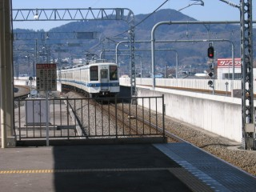
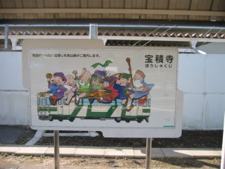
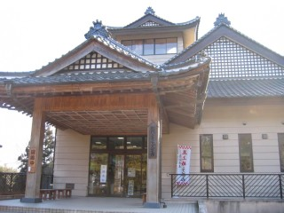
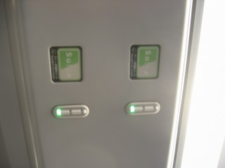

上記の理由で那須烏山市内に戻ることにしたが、さきほどの山越えはつらい。線路沿いに歩くことにする。そのため、滝駅の写真を撮ることができなくなった。本来乗るはずだった烏山発15:39の列車を、踏み切りで迎え撃ち。
上記の理由で那須烏山市内に戻ることにしたが、さきほどの山越えはつらい。線路沿いに歩くことにする。そのため、滝駅の写真を撮ることができなくなった。本来乗るはずだった烏山発15:39の列車を、踏み切りで迎え撃ち。
ついに、風邪でくたばる。先週末は仕事でつぶれてしまったので、弐号機(EVA-02)の整備を行なうことにした。VShield(VirusScanの常駐プロセス)が重たいらしいということはわかったので、VirusScanをアンインストールしてAVG Anti-Virus Free Editionをインストールしてみる。すると体感速度が、全然違うでやんの。無線LANのNIC(WLI-PCM-L11GP)も、設定してみる。無線LANアクセスポイントの設置位置をディスプレイの手前に変更したところ、あっさりつながる。やはりディスプレイの向こう側に置いてしまうと、電波が届きにくくなってしまうのだろうか。あとSIIのMC-6550を設定すれば、ほぼ終了でせう。とはいえ、アドレス帳のバックアップにしか使わないんだけど。
だいふ前からなのだが、布団のマットレスがぺっちゃんこになってしまった。昨年末あたりから買いに行きたいと思いつつ、あっという間に年が明けて2月になってしまった。で、前回はイオンに行ったので、今回はイトーヨーカドーに行ってみたらブリジストンのものしかないでやんの。そもそも、ブリジストン? タイヤメーカーだろ～って感じ。とわいえ、ブリジストンのものしか置いてないんだったら、それを買うしかない。で、敷いてみた。ブリジストンだからなのか新品だからなのかはわからないが、寝心地が全然違う! ←あたり前だから。いや～、いい買い物しました(をひ)。タイヤのコンパウンドの技術を応用したのだろうか?
FEP/IMEの話。昔は、いっぱい登録して自分の辞書を「つくった」もんだったが、Windowsに移ってからは物量作戦のようなデフォルトの辞書をそのまま使うようになってしまった。そもそも、Windowsにおいては「FEP」ではなく「IME」と名前も違うしな。問題は語彙の数ではなく自分の言葉がいかにストレスなく候補にあらわれるか、だと思うんだが、何回確定させても学習しない単語とかあったりする。ただ、そのへんはほとんどあきらめている。理由は、Windowsだから……というよくわからないものもあるが、あまり辞書をカスタマイズしてしまうと他人の環境を使うときに困ってしまうから、というのもある。逆の、他人が自分の環境を使うときに困る、というのもある。
どうしても仕事でPCを使うときはそうしたケースがあるし、それは仕方ないと思っている。そのために仕方なく……というほど悲観的なものではないのだが、やはりデフォルト環境のままというのが色々と便利。どうしてもダメなのが、テキスト・エディター。こればっかりは、PC-9801版Vz Editorのキーアサインでないといけない。本当はVz Editor標準のものではなく、c.mosさんの定義ファイルをさらにカスタマイズしたものを使いたいのだが、さすがにそれをやると大変。とゆーわけで、テキスト・エディターはWZ EditorをVz Editorのキーアサインで使っているのだが、これがお嫁さんに大層評判が悪い。もちろん、Vz Editorのキーアサインを知らないからなのだががが。
「んなこたぁ知らねーよ」と思われるかもしれないが、当「よくわか」には何度か宝積寺という地名が出てくる(はず←をひ)。その宝積寺から烏山まで、JR烏山線という非電化路線が存在する。前々から行ってみたいと思いつつ、なかなかその機会がなかった。多分お嫁さんは退屈するだろうと思ったので、なんとひとりで行くことにした。
写真は、浅草から乗った快速列車。場所は、栃木駅。
 ひとりで行くのであれば、時間も手間ヒマも惜しくない。んが、カネは惜しい。とゆーわけで、前回同様東武鉄道で向かう。浅草まで都営地下鉄で移動し、浅草からは快速列車に乗る。栃木駅で乗り換えのため降車。快速列車の車内は北千住からかなりの混雑だったのだが、それでも寒くて途中トイレに行く。
写真は、東武宇都宮行きの列車を待っている間にやってきた準急。場所は、同じく栃木駅。
東武宇都宮からやってきた、クハ5000系。栃木から東武宇都宮までの所要時間は、約40分。浅草発9:10の快速に乗って、10:26栃木着。10:42に出発して、11:20頃に東武宇都宮に着いたような気が……腹が減っていて、よくおぼえていない。運賃は、浅草から1,160円。JRの場合、上野－宇都宮間は1,890円。しつこいけど、場所は同じく栃木駅。
とにかく、昼メシが食いたい。宇都宮といえば、餃子。「みんみん」へ行くと、すでに行列。前回も行列していたので、想定内ではあるが。混対(違う)のおじさんによると、200人並ぶときもあるという。今日開店前に並んでいたのは、50人だったとのこと。30分ほど並んで、カウンターに座る。水餃子(220円)を頼んで、地元の人の真似してタレと酢とラー油をスープの中に入れて食べる。うますぎ。
20分ほど歩いて、JR宇都宮駅へ移動。E231系5両編成の黒磯行きに乗って、宝積寺へ向かう。宝積寺は宇都宮から二駅隣で、所要時間は11分。
JR宇都宮線(東北線)、宝積寺駅1番線ホーム。3番線には、すでに烏山線のキハ40形が入線している。
宝積寺駅2番線ホーム側から、1番線ホームおよび駅舎を激写←つまらん。
烏山線、キハ40形。左は、仁井田駅のトイレを修理しに行くおじさん←ホントだってば!
先頭側からも撮ってみる。2両編成で、ワンマン運転。ディーゼルエンジンの音と振動で、昔の相模線を思い出す。ただし、相模線はキハ30系。車両情報は、「烏山線のページ」が詳しい。
 宝積寺の駅には、こんな看板がある。これについては、「からせん縁起駅舎の旅/烏山線－七福神めぐり」が詳しい。
各駅には、それぞれの神様が割り当て(?)られていて、烏山駅は「毘沙門天」。
車両にも、七福神が描かれている。当然、車両によって神様が異なる。
車内。無人駅では、整理券を取って乗車する。降車時は、右側の運賃表で所定の金額を運転手に支払う。そのため、無人駅で開閉するドアは先頭のみ。有人駅では、ふつ～に降りればよい。ただし、ドアはボタンを自分で押して開ける必要がある。
もちろん、こんなこと街から来たおねーちゃんは、わかるわけがない←女性差別発言か? どうやって降りてよいのかわからずにあたふたしていると、地元のおねーちゃんが運ちゃんに向かって「ちょっと待ってー!」と叫ぶ。そして、街のおねーちゃんに教える。ええ光景やな～。仕込みですか? ←違うから。
車内には、なぜかゴミ箱が……そういえば、仙石線の車内にもゴミ箱があったような。反対側には、消火器があった。とゆーわけで、13:37にいよいよ発射……もとい発車。時速30kmぐらいで、ガタゴトと走る。制動時の「ジャー」というか「ガー」というような音も、相模線を思い出す。乗客は、お年寄りが多い。おばあちゃん達はなぜか全員斜め座りで、外の景色をご観覧。
一日数本、宇都宮まで直通の便がある。当然キハ40形なのだが、東北線内は時速70～80kmぐらいで走行する。たまたま昔宇都宮から宝積寺まで乗ったことがあるのだが、エンジンがうなりをあげて鬼怒川を渡る橋へ勾配を上っていく様は、なんつーか迫力あった。
約30分で、終点の烏山に到着。単線で、途中列車交換が可能なのは大金(おおがね)のみ。写真は、烏山駅から続…かない線路。右側の線路とホームは、現在は使われていない模様。
ホームには、石でできたナゾの物体が。あとで、駅近くの民家の玄関にも同じものを発見する。さらに、なんと宇都宮に住んでいたことのあるお嫁さんの家にもあったという。栃木ではメジャーなのだろうか?? ちなみに、この改札口は普段使われていない模様。団体用なのか?
烏山駅の駅舎。出札は、Suicaが使えず現金清算。宇都宮からは、570円。
烏山市内(正確には、那須烏山市内)の観光が目的ではなく烏山線に乗ることが目的だったため、別にすることがない。とわいえ、せっかく行くのだからと事前に調べた「龍門の滝」に向かう。実は最寄り駅はひとつ手前の滝なので、散歩がてら歩いていくことにした。愛后台緑地公園を抜けていくと直線コースなので通ってみたが、スゴイ山道。アスファルトで舗装されているので、山道とはいわないかもしれないが。山越えの急勾配を上って、下る。
写真は、愛后台緑地公園から見える烏山大橋。
滝駅近くの風景。滝駅の写真はあとで撮ろうと思っていたのだが、後述の理由で撮らずじまい。
愛后台緑地公園から下りてきた道。
 滝駅から徒歩5分ほどの場所にある、龍門ふるさと民芸館。入館は無料。左側に、龍門の滝に下りる階段がある。ここで、「東力士」という地酒があることを知る。しかし、龍門ふるさと民芸館では販売していないという。製造元の島崎酒造の場所を教えてもらうと、なんとさっき降りた烏山駅の近くではないか。つ～ことで、あとで戻ることにする。
龍門の滝。いわれは、「からせん縁起駅舎の旅/烏山線－七福神めぐり」のサイトを読んでください。龍門ふるさと民芸館の中には滝の写真やイラストが多数展示されているのだが、春から夏にかけての季節がとてもすばらしい情景。滝を手前に走る烏山線のキハ40形が、なんともいえない情緒を表現している。
上記の理由で那須烏山市内に戻ることにしたが、さきほどの山越えはつらい。線路沿いに歩くことにする。そのため、滝駅の写真を撮ることができなくなった。本来乗るはずだった烏山発15:39の列車を、踏み切りで迎え撃ち。
同じ列車を、追い撃ち。「迎え撃ち」とか「追い撃ち」とか使っているけど、ぢつわ自分は似非鉄っちゃん。「乗り鉄」でも「撮り鉄」でもなかったりする。
島崎酒造。手前の白い建物ではなく、茶色の看板がかかっている方の建物。試飲も可能だが、下戸なので遠慮させていただく。
東力士。右は、季節限定の「燗あがり」。実はいっぱい種類があって、どれを買おうか迷った。とりあへず限定品ということで「燗あがり」は決定したが、あと一本はオーソドックスなものがよい。とゆーことでトラベリックスの本上まなみの「おすすめは、なんですか?」ではないが、「オーソドックスなものが欲しいんですが」と聞いて教えてもらう。2本で、税込1,961円。まだ「燗あがり」しか飲んでいないが、大変おいしい。
烏山発16:39の列車に乗って、宝積寺に戻る。列車は一時間に一本しかないので、乗り遅れると大変なことになる。写真は、宝積寺から宇都宮まで乗った210系。場所は、宇都宮駅。ここで、お嫁さんと合流する。夕飯は少し歩いて、「来らっせ」で食べる。そのあと「みんみん」へ向かい、持ち帰りで冷凍餃子を購入。ぢつわそのために、前回購入した発泡スチロールの容器を持ってきていたのだ! 今回は容器があるため、当然容器代は不要。4人前1箱で、940円。ドライアイスは、タダ(のはず)。
お嫁さんは、なんと宇都宮までJRのグリーン車で来たと言う。自分も乗りたい……とゆーわけで、復路はJRにする。自動券売機で、Suicaでグリーン券を購入する。といっても、文字通りの「グリーン券」は発券されない。Suicaに情報が書き込まれるだけである。E231系のグリーン車に乗車すると、各座席の上に写真のようなものがある。通常は、赤が点灯している。ここにSuicaをタッチすると下の写真のように緑にかわる。
 緑色になった状態。この状態になっていると、グリーンアテンダントのおねーちゃん……もとい、おねーさんは確認だけして素通りしていく。降車駅を過ぎると、赤くなる仕組み(らしい)。すご～い。快速ラビットに乗車したため、1時間半で上野に到着。ちなみに普通列車の場合は、1時間45分ほど。